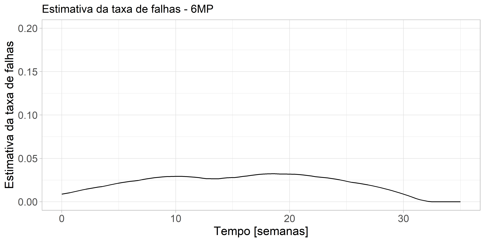

library(survival)
library(readxl)
dados <- read_xlsx("anderson.xlsx", col_names = TRUE)
ajusteKM <- survfit(Surv(tempo, status) ~ 1, subset = (Rx==0), data=dados)
ajusteKM_sum <- summary(ajusteKM)
pesos <- ajusteKM_sum$n.event/ajusteKM_sum$n.risk
h <- density(ajusteKM_sum$time, kernel = "epanechnikov", n = 100, from = 0, to = 35, weights = pesos)
library(ggplot2)
data <- data.frame(x=h$x, y=h$y)Análise de Sobrevivência
Modelos não Paramétricos
Análise de Sobrevivência
Nesta apresentação vamos ver passo a passo como obter uma estimativa da curva de sobrevivência através do método de Kaplan-Meier.
Vamos inicialmente utilizar o pacote survival que é a principal referência em modelos de análise de sobrevivência.
Vamos usar neste exemplo dados de pacientes com leucemia.
O objetivo é verificar se o tratamento proposto, 6MP, tem efeito sobre a doença.
Existem dois grupos de pacientes:
- 21 receberam 6MP que é um medicamento para tratar leucemia
- Os outros 21 receberam placebo.
O evento falha aqui é ocorrer uma recaída na doença.
Função taxa de falhas e quantis
Vamos obter uma aproximação da função taxa de falhas usando a função density
Posteriormente vamos obter o quantil usando uma função do pacote survey
Taxa de falhas h(t) não paramétrica - 6MP
ggplot(data, aes(x=x, y=y)) + geom_line() + scale_y_continuous(limits=c(0,0.20)) + theme_light() +
theme(axis.text = element_text(size = 12),
axis.title = element_text(size = 14)) +
labs(x = "Tempo [semanas]", y = "Estimativa da taxa de falhas", title = "Estimativa da taxa de falhas - 6MP")
Taxa de falhas h(t) não paramétrica - Placebo
tempo2<- c(1,1,2,2,3,4,4,5,5,8,8,8,8,11,11,12,12,15,17,22,23)
status2<- c(1,1,1,1,1,1,1,1,1,1,1,1,1,1,1,1,1,1,1,1,1)
dados <- data.frame(tempos=tempo2, status=status2)
ajusteKM <- survfit(Surv(tempos, status) ~ 1, data=dados)
ajusteKM_sum <- summary(ajusteKM)
pesos <- ajusteKM_sum$n.event/ajusteKM_sum$n.risk
h <- density(ajusteKM_sum$time, weights = pesos,
kernel = "epanechnikov", n = 100, from = 0, to = 25)
data <- data.frame(x=h$x, y=h$y)ggplot(data, aes(x=x, y=y)) + geom_line() + scale_y_continuous(limits=c(0,0.20)) + theme_light() +
theme(axis.text = element_text(size = 12),
axis.title = element_text(size = 14)) +
labs(x = "Tempo [semanas]", y = "Estimativa da taxa de falhas", title = "Estimativa da taxa de falhas - Placebo")